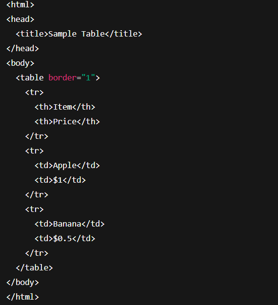

The <audio> is used to embed audio content (like music, podcasts, or sound effects) directly into a web page.
| Attributes | Description |
|---|---|
| controls | Displays play, pause, and volume buttons |
| autoplay | Audio starts playing automatically when the page loads |
| loop | Audio repeats when finished |
| muted | Starts with audio muted |
| preload | Specifies whether to preload the audio ("auto", "metadata", "none") |
Supported Audio Formats are: MP3,Ogg, etc
The <video> tag is used to Integrate video content (like tutorials, movie clips, animations) directly into a web page.
→ Under "src" we put link or file destination of video which we we want to display
Supported Video Formats are: MP4, WebM, Ogg etc
The <embed> tag like a window you put inside your web page that shows something from another place — like a PDF file, a video, or a small game.
It’s like when you embed a YouTube video on your blog, or show a PDF document directly on your website without needing the user to download it.
This will creates small window where the PDF appears right inside the page.
Avoid using <embed> for modern audio and video content unless absolutely necessary (PDF, Flash, or legacy apps).
allowfullscreen attribute is used in the <iframe> tag to allow the embedded content (like a video or a map) to be displayed in full-screen mode.
Code Example:1. Why here is allowfullscreen :
Modern browsers support allowfullscreen without any value (just the attribute name).
The © symbol is used to show that something belongs to someone and is protected by copyright law
Key Point:It shows people that copying it without permission is not allowed.
An <iframe> embeds another HTML page inside the current page.
It is useful when you want to show pages without redirecting users.
Example: Embedding a page within webpage
let me show u this web-page within web page.
You just need to embed that webpage(.html) file under src
create a file named table.html with a simple table
Now, embed this table in another page using :<iframe>
The autoplay attribute tells the browser to start playing audio or video automatically when the page loads.